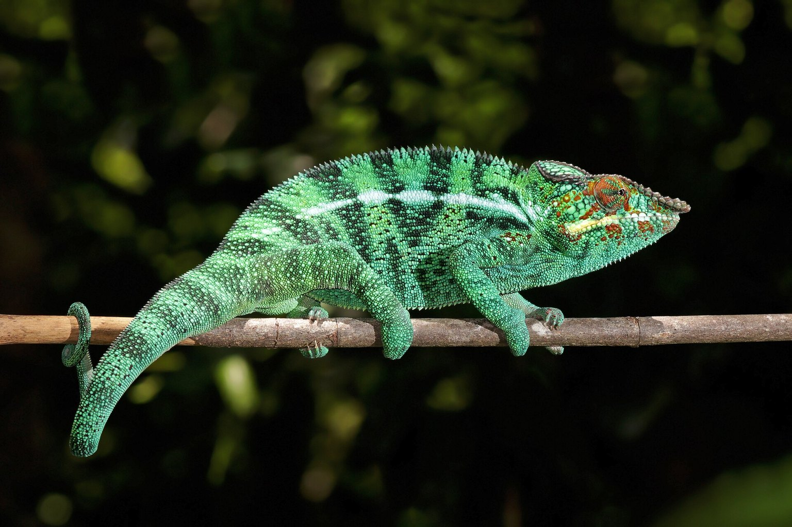

Panther Chameleon Hydration: Why Misting Twice a Day Still Leaves Them Dry
Chameleons do not drink standing water and they do not drink on demand. Hydration is a function of when the fog runs, not how wet the cage gets.

A panther chameleon is a low-water animal. Its skin is essentially non-permeable, it does not drink from still water, and it loses water through the only surface it cannot seal: the mouth and the corneas. An adult Furcifer pardalis runs 45-60 % relative humidity by day and needs a nighttime rise into the 85-100 % band, and almost every "my chameleon looks dry" case I have seen traces to a humidity curve that never rises. Understanding the misting schedule is first an exercise in understanding what that number does overnight.
The keeper's diary: a Tuesday, 21:40
I keep a Tamatave male, seven months old, in a screen cage that I line with a shower curtain on two sides. On a Tuesday in March I ran the mister at 20:00 and left a digital hygrometer in the cage, one probe at the mid-vivarium and one at head height. At 23:00 the high probe read 54 %. The low probe read 48 %. I had assumed — had not measured — that the evening spray carried the animal into the night. It did not. It had dried out within ninety minutes. That night I swapped to a fogger on a timer and repeated the test. At 02:00 the same zone read 92 %. The following morning I watched the animal take a long drink from a glass pipette; his hydration had been running on a knife-edge for weeks. The digital hygrometer cost thirteen pounds. It was cheaper than the hydration failure I had been about to buy.
What the humidity actually does
Water is the constraint. A panther chameleon's skin is largely waterproof thanks to a lipid-and-keratin outer layer, which is what keeps a tree-dwelling animal alive in the dry season. What that means is they cannot "absorb" humidity through the skin in any meaningful way; the humidity is a buffer that slows evaporative loss through the eyes and mouth. If ambient humidity is 40 % at 26 °C, the air pulls a steady trickle of water out of the animal. At 90 % the gradient collapses and the trickle becomes a fraction of itself.
That physiological fact drives the misting schedule. The daytime is for drinking; the nighttime is for retention. A spray that wets the leaves at lunchtime is doing two jobs — providing droplets to drink and briefly lifting local humidity — but it cannot hold a low-vivarium gradient overnight if the room dries back within the hour. Morning and evening misting alone will not carry the animal if the room is a dry one. The nighttime fogging is the load-bearing element, and it is the one most keepers skip.
Hydration failure is slow. In the early stages the animal eats normally and looks fine, but the skin around the head and tail starts to take on a faint dullness, the eyes lose her sheen, and the urate in the droppings becomes chalk-white and firm rather than soft and slightly cream. The urate colour and texture is the most useful daily measure you have. A dry, crumbly urate is pre-disease; kidney failure follows over weeks, and by the time you see sunken skin around the head it is a much harder problem.
Building the schedule
Three moves, all measured. First, plot the daytime band. Aim for 50-60 % relative humidity at head height in the warm end, falling to 40-50 % in the cool end during the middle of the day. Second, plot the night. The fogging needs to run for 4-6 hours starting at lights-off, and the target is 85-100 % at the layer the chameleon roosts in. Third, time the mistings. Mist for 2-3 minutes in the hour after lights-on, again around midday, and once more in the two hours before lights-off. Mist numbers are separate from fog numbers — the mist is for droplets, the fog is for the gradient.
- Set lights on at 07:00, off at 19:00 — a 12-hour photoperiod. Chameleons are equatorial; they do not need a heat-light sequence, and a consistent 12:12 cycle drives normal feeding and basking.
- Mist for 2-3 minutes at 08:00, 13:00 and 17:45. Do not mist after lights-off; droplets sitting on the animal overnight at low temperatures are a respiratory risk.
- Run the fogger from 20:00 to 02:00. Confirm the reading rises into the 85-100 % band by 22:00.
- Drainage is not optional. Under the substrate layer put 2-3 cm of expanded clay pebbles; without drainage, standing water breeds bacterial problems. A second digital hygrometer, or a probe pair, is the cheapest insurance you can buy here:
- Verify with a two-probe digital hygrometer. Probe one at the roost height, probe two at mid-vivarium. Log at three points in the 24-hour cycle: 08:00, 14:00, 23:00. For a fortnight. Then reset the schedule based on what the numbers say.
The two parameters that will change the numbers fastest are room temperature and room humidity. A dry house in winter — 30-35 % is normal for a centrally heated UK home — will pull the fog out of the cage. Fine mesh will not hold the fog. That is why a fogger is more reliable than a mister for the nighttime band, and why screen cages usually need partial side-sheeting.
Life stages and why the numbers shift
Juveniles dehydrate faster than adults, and the same fogging protocol will not be sufficient for a hatchling. Small animals have a high surface-to-volume ratio: evaporative loss per gram of body is higher, and the fogging must be longer or the vivarium more enclosed. I use a fully enclosed glass or PVC vivarium for anything under six months old, with the fogging extended by two hours. Adults can handle an open-screen configuration if the room is humid or the cage is sheathed. Subadults — six to twelve months — sit in between.
Panther chameleon morphs are the extreme case. The Nosy Be, Ambilobe, Tamatave, Ambanja, Nosy Faly and Sambava locales vary in colour but not in hydration requirement. Hybrids are widely sold and often mislabelled. None of this changes the misting schedule. It does change what you should expect a hydrated animal to look like, because the pale green or blue-toned morphs show dehydration as dullness long before darker morphs do.
| Stage | Basking spot | Cool end | Daytime RH | Night RH | Mist frequency | Fog duration |
|---|---|---|---|---|---|---|
| Juvenile (0-6 mo) | 28-30 °C / 82-86 °F | 22-24 °C / 72-75 °F | 55-65 % | 90-100 % | 3 × 2 min | 6-8 hr |
| Subadult (6-12 mo) | 29-31 °C / 84-88 °F | 22-24 °C / 72-75 °F | 50-60 % | 88-100 % | 3 × 2-3 min | 5-6 hr |
| Adult (12 mo+) | 30-32 °C / 86-90 °F | 21-24 °C / 70-75 °F | 50-60 % | 85-100 % | 3 × 2-3 min | 4-6 hr |
| Gravid female | 29-31 °C / 84-88 °F | 21-24 °C / 70-75 °F | 55-65 % | 90-100 % | 3 × 3 min | 6-8 hr |
Gravid females are the stage most often mismanaged in temperatures, but hydration matters just as much. A female producing eggs is pulling calcium and water rapidly; if she dehydrates before laying, she is a high risk for dystocia, and that is a veterinary emergency, not a husbandry problem.
Reading the animal, not just the gauge
Numbers are only half the story. A chameleon with a working hydration protocol eats well, has a straight casque, clear eyes and a droppings log where the white urate is soft and cream-coloured rather than chalky. A chameleon with a broken protocol starts to refuse food at the top of the enclosure, stops basking in the middle of the day, and produces dry urates. Look at the casque and the eye turrets — sunken skin around the eye is a late-stage sign and means weeks of prior deficit.
The refusal of food is also worth noting. We have a separate guide on horn-worm and feeder-appetite quirks, but in the hydration context, a refusal to eat combined with a good basking temperature is almost always environmental. Before you swap feeders, check the hygrometer.
Treatment of established dehydration is a vet job. Rehydration fluids and, in severe cases, subcutaneous fluids are the appropriate response; home misting will not fix an animal that is already past the threshold. Where the evidence is thin is in the exact fluid volume per body mass for chameleons — clinical practice accepts the standard reptile rehydration guidelines but the species-specific data is sparse. Do not improvise at home.
Ventilation, drainage and the enclosure as a system
The nighttime fogging has one non-negotiable condition: the enclosure must move air. A sealed glass box at 95 % humidity for six hours will produce condensation and, in a panther chameleon, is a real risk for respiratory infection. The compromise is a mesh lid or a mesh front panel with the fog source running through a tube into the enclosure, not a sealed fog box. The air exchange needed is small — one or two 10 × 10 cm mesh panels will do — but it must be present.
Drainage is the other half of the system. All that water has to go somewhere. Expanded clay pebbles under a soil or coir layer hold the surplus; a siphon or drain tap empties it. A vivarium without drainage begins to smell of marsh within weeks. Clean-up crews (springtails, small isopods) are useful in a bioactive layer, but they will not handle a drowned substrate. The substrate is a drainage problem first, a cleanup problem second.
Fogging machines need cleaning. Every three weeks, run a food-safe citric acid solution through the reservoir and flush it. Growth in a fogger line is one of the most underrated sources of bacterial exposure in a chameleon setup, and the symptoms look exactly like dehydration.
Frequently asked questions
Can I skip the fogger and just mist more?
Not if your house runs dry. Mist lifts local humidity for 30-90 minutes and then it falls back to room levels. If your room sits at 40 % or below, the overnight band will not be reached by misting alone. A fogger on a timer is the only routine tool that will hold 85-100 % for six hours.
Does my chameleon need to drink from a bowl?
No. Panther chameleons drink from droplets on leaves and from glass pipettes, not from standing water. Some will learn to use a dripper cup; most will not. Offer a misted leaf surface three times a day and a free-running drip for 20-30 minutes in the evening.
What does a dehydrated chameleon's urate look like?
Chalk-white, hard and crumbly rather than soft and cream. The urate sits at the end of every dropping and is the most useful daily indicator you have. Any urate that looks like dry powder is a signal to check the hygrometer before doing anything else — and to consider a vet visit if the pattern continues past a week.
What we actually use
Two pieces of equipment that do most of the work in a Panther Chameleon setup. Nothing here is here because a brand asked.
-
Check price on AmazonHabitat & Decor
Digital Hygrometer & Thermometer, 2-pack
Two of them — a single probe at the top of the cage reads the hot dry layer and tells you nothing about the plant canopy.
Typical price $16–28 -
Check price on AmazonHabitat & Decor
LECA Clay Pebbles for Drainage
A drainage layer under the substrate, so the fog that keeps humidity up does not become the standing water that grows bacteria.
Typical price $12–20
Links open Amazon in a new tab. We do not set or track prices.
Affiliate disclosure. As an Amazon Associate, we earn from qualifying purchases. Every card in this guide is an affiliate link — it costs you nothing, and we only list gear we have run in our own enclosures.